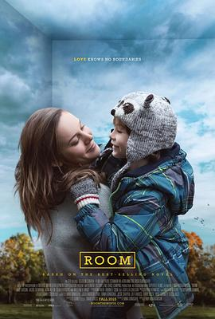

房间 / Room
又名：不存在的房间(台) / 抖室(港)
作品信息
| 导演 | 伦尼·阿伯拉罕森 |
| 编剧 | 艾玛·多诺霍 |
| 主演 | 布丽·拉尔森 / 雅各布·特伦布莱 / 肖恩·布里吉格斯 / 温迪·古逊 / 阿曼达·布鲁盖尔 / 乔·平格 / 琼·艾伦 / 卡斯·安瓦尔 / 威廉·H·梅西 / 兰德尔·爱德华兹 / 罗德里戈·费尔南德斯-斯托尔 / 罗里·奥谢 / 汤姆·麦卡穆斯 / 杰克·富尔顿 / 梅根·帕克 |
| 类型 | 剧情 / 家庭 |
| 制片国家/地区 | 爱尔兰 / 加拿大 / 英国 / 美国 |
| 语言 | 英语 |
| 上映日期 | 2015-09-04(特柳赖德电影节) / 2015-10-23(多伦多) / 2016-01-15(爱尔兰/英国) / 2016-01-22(美国) |
| 片长 | 118分钟 |
| IMDb | tt3170832 |
最后一次看到是 2026-10-07T23:15:59+08:00 · 豆瓣原页